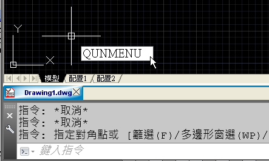
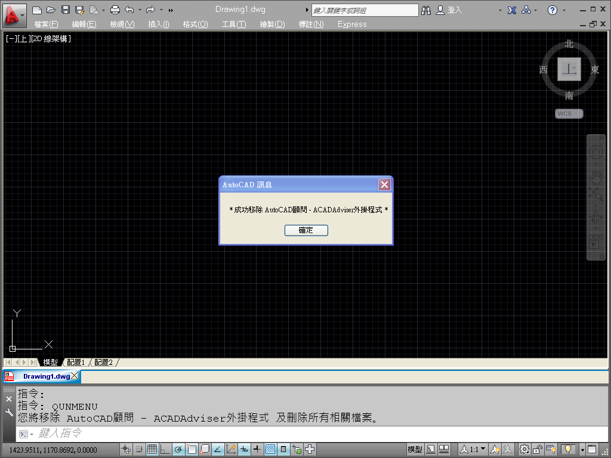

※提醒用戶若要「電腦重灌」或「AutoCAD重新安裝」，必須先「移除ACADAdviser外掛程式」，然後提供回傳「移除訊息畫面」，確認移除後才可以「轉移授權」。
註：用戶若是無法提供「移除訊息畫面」，恕不提供「授權轉移」服務。
👇影片展示：3:48 外掛轉移授權步驟
https://www.youtube.com/watch?v=arvN3M-1Z4k&t=228s
AutoCAD顧問論壇外掛程式 安裝說明及升級更新
0:00 片頭展示
0:30 安裝路徑偵測步驟
1:05 主程式下載安裝步驟
2:09 新增外掛工作區
3:48 外掛轉移授權步驟
5:30 外掛升級更新下載
6:46 PDF出圖新功能展示
※說明：
1.用戶轉移授權 AutoCAD顧問 - ACADAdviser外掛程式，請先在舊電腦執行「主程式移除步驟」。
註：移除授權之後舊電腦，無法再進行主程式安裝。
2.「主程式移除步驟」完成後，請將「移除訊息畫面」擷取回傳再重新授權。
3.重新授權方式，用戶請到新電腦執行 ACADAdviser外掛程式 - 安裝路徑偵測步驟 完畢後，接著可以「安裝主程式」到用戶的電腦。
移除步驟一：輸入移除主程式「QUNMENU」指令。

移除步驟二：訊息提示「您將移除 AutoCAD顧問 - ACADAdviser外掛程式 及刪除所有相關檔案」→「是否要繼續」→「是(Y)」。

移除步驟三：訊息提示「成功移除 AutoCAD顧問 - ACADAdviser外掛程式」。


移除步驟四：請按下鍵盤「Print Screen」鍵擷取畫面 → 再將圖片貼至「小畫家」儲存後回傳。

相關主題文章：